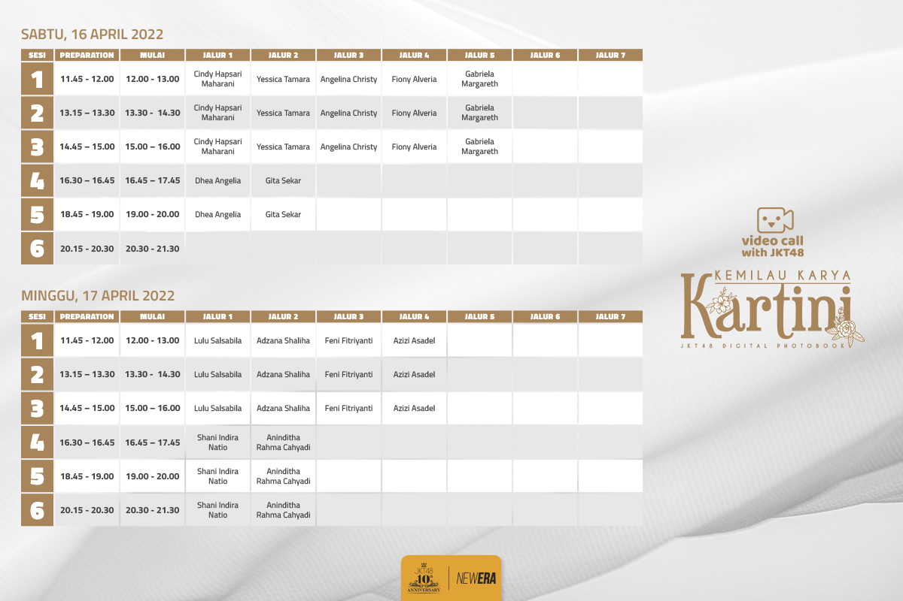
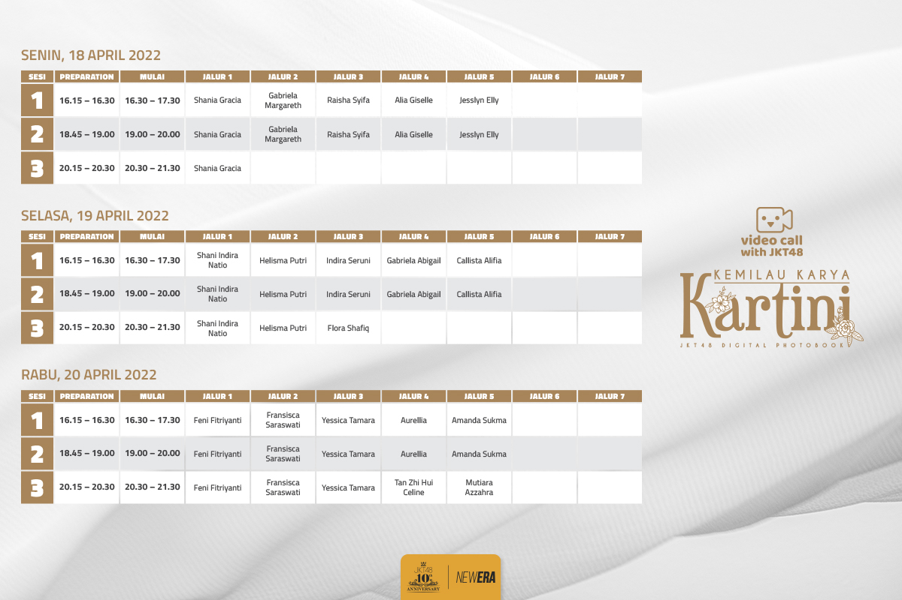
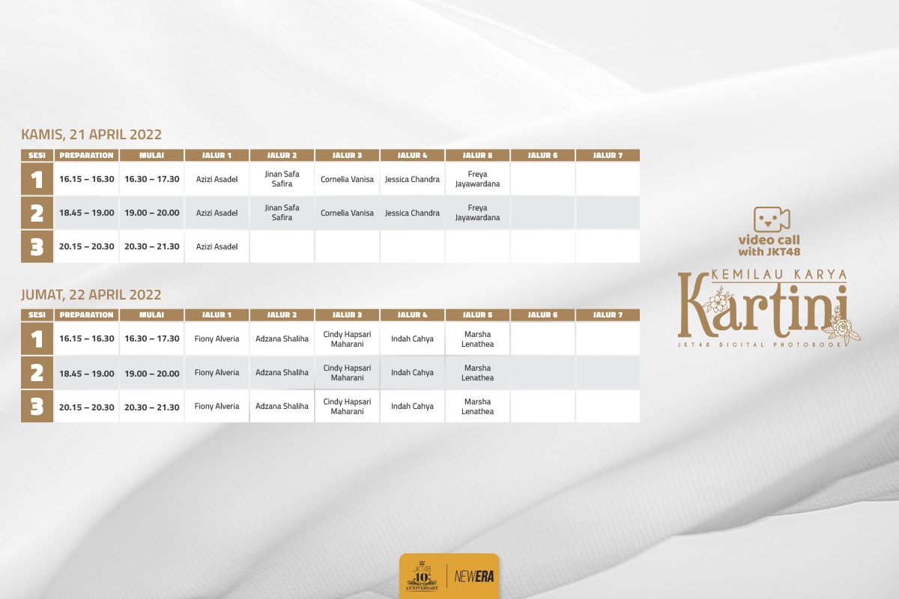

Terima kasih atas dukungannya untuk JKT48.
Pada hari Jumat, 8 April 2022, JKT48 akan membuka Pre-Order untuk pembelian Digital Photobook “Kemilau Karya Kartini". Melalui digital photobook ini, kamu bisa melihat secara lebih dekat kemilau para member saat mengenakan kebaya sambil memperlihatkan kegemaran masing-masing yang menjadi semangat mereka untuk berkarya.
Sebagai benefit untuk anggota OFC, mulai sekarang penjualan digital photobook dan pemesanan sesi Video Call didahulukan untuk anggota OFC. Pre-order khusus OFC dimulai pada 8 April 2022 pukul 20.00 WIB. Setelahnya, penjualan untuk publik akan dibuka pada 9 April 2022, pukul 20.00 WIB. Untuk setiap pembelian Digital Photobook “Kemilau Karya Kartini”, kalian akan mendapat bonus Video Call with JKT48. “Video Call with JKT48” adalah layanan di mana kamu dapat melakukan percakapan berdua dengan member JKT48.
Berikut adalah jadwal Video Call with JKT48 untuk April 2022:
  Kami tunggu partisipasinya!
JKT48 Operation Team.